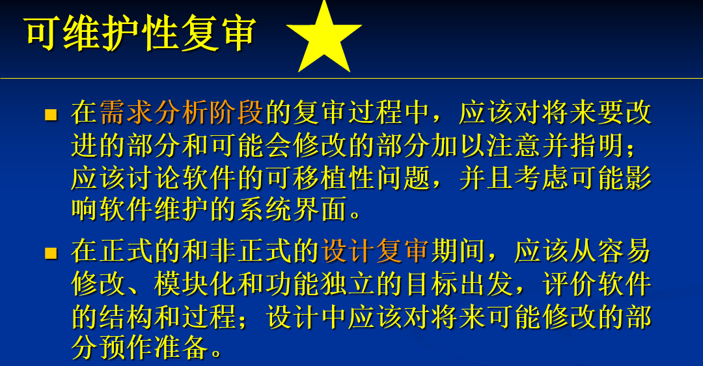
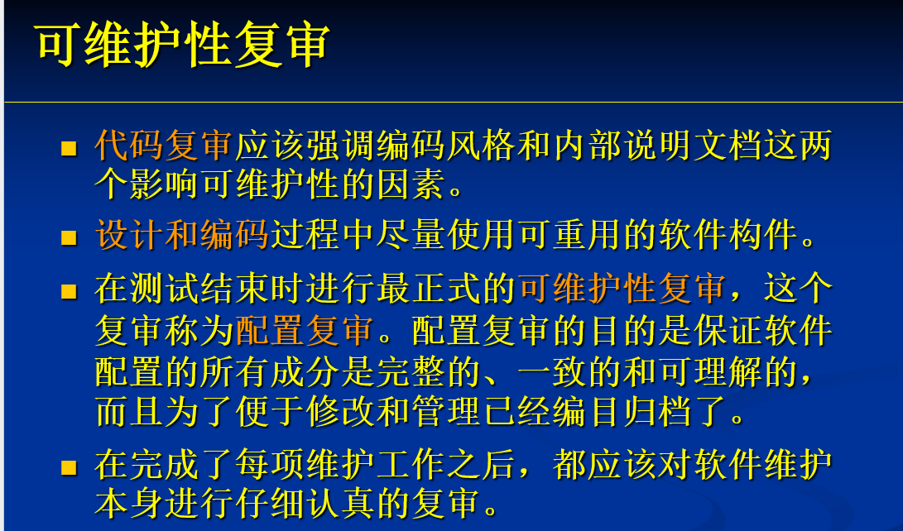
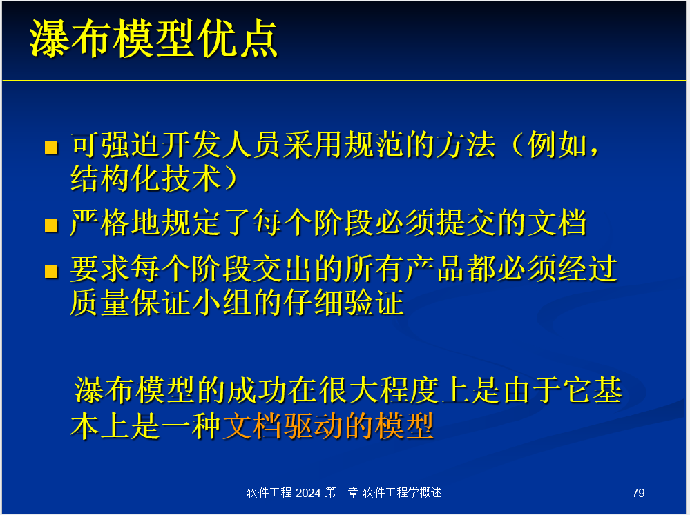
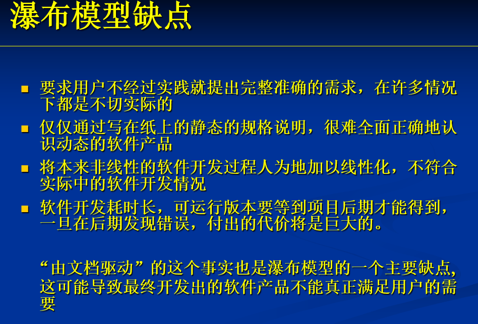
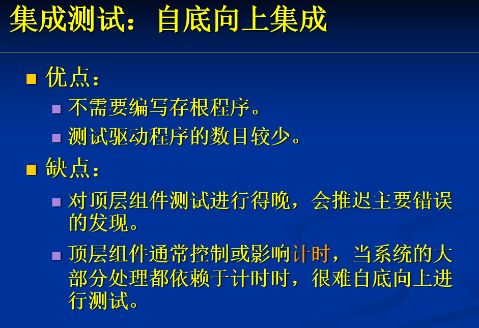
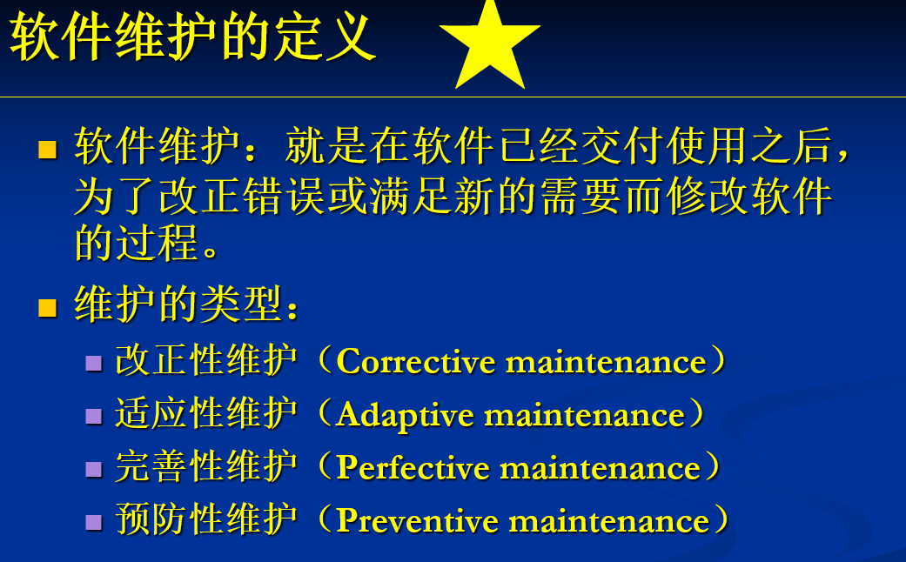
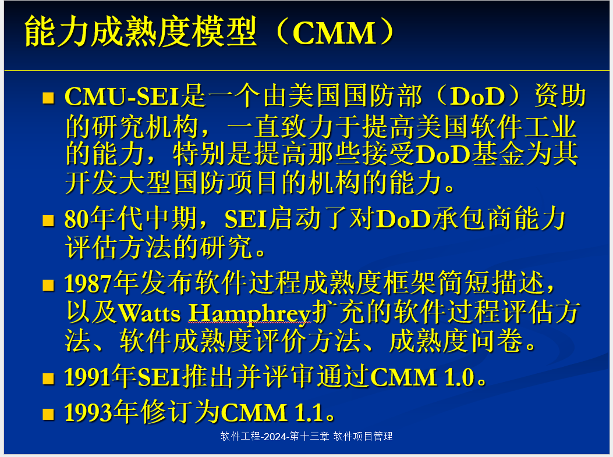
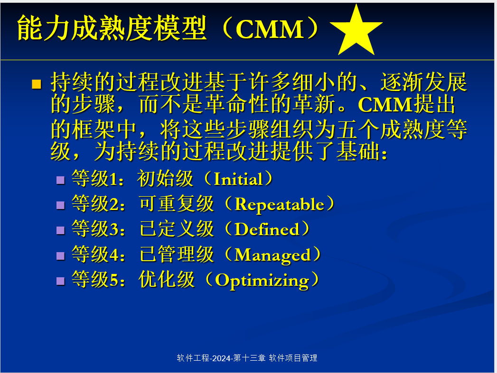
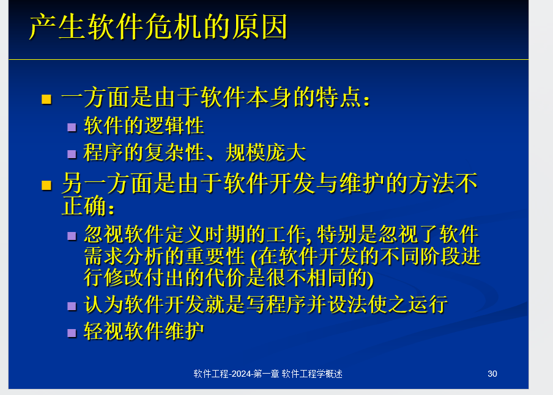
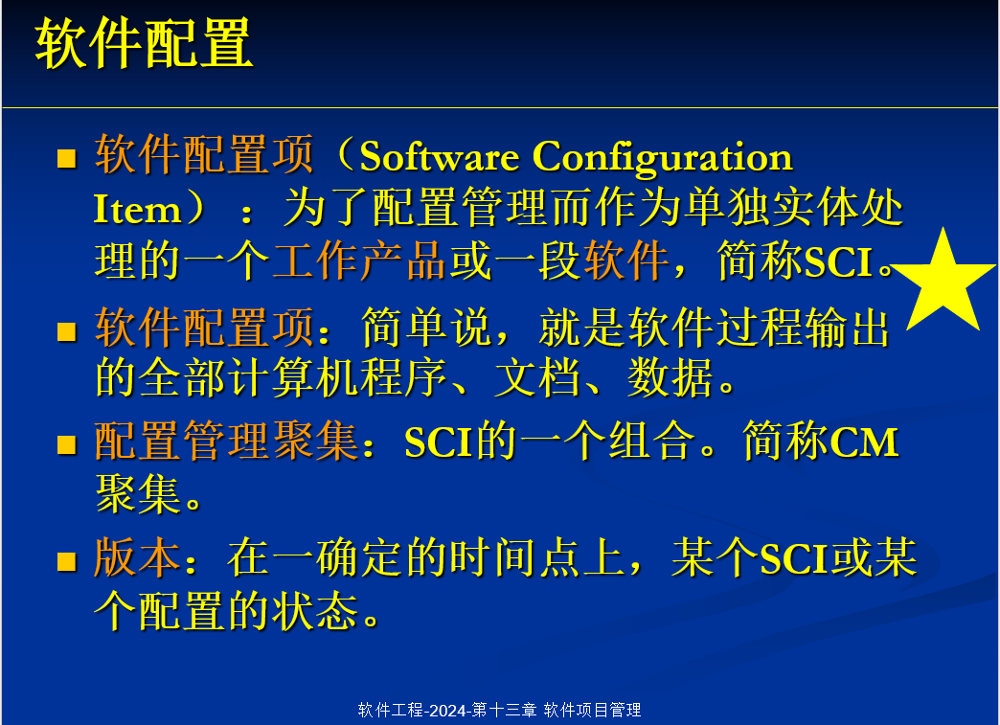

软件工程简答题
软件工程A
简答题
1.软件维护是软件生命周期的最后一个阶段,也是持续时间最长代价最大的一个阶段。软件工程学的主要目的就是要提高软件的可维护性,降低软件的维护代价。请说明:为提高软件的可维护性,在软件生命周期的每个阶段应如何为软件维护预做准备?


2.
a.请列举出至少6种软件过程模型的名称
瀑布模型 螺旋模型 v模型 快速原型模型 增量模型 喷泉模型 RUP 微软过程 极限编程
b.请描述瀑布模型的各阶段,简述该模型的优势和劣势。
需求分析—-> 规格说明 —-> 设计 —->编码 —->综合测试 —->维护
优势：

劣势：

3.
- 测试用例包括测试数据和预期的（输出？）
- 概括地说,软件生命周期由（软件定义）软件开发和运行维护3个时期组成,每个时期又进一步划分成若干个阶段。
- 通过了正式复审的软件配置项称为（基线）
- 瀑布模型是由（文档）驱动的
- 模块的（作用域）定义为受该模块内一个判定影响的所有模块的集合。
- 面向过程的分析方法中,通常使用数据流图和(用例图)共同描述系统的功能模型。
- 软件测试是为了(发现)错误而执行程序的过程。
- 软件体系结构是对子系统、软件系统构件以及(它们之间的相互关系)的描述。
- 模块独立的概念是模块化、抽象、( 信息隐藏)和局部化概念的直接结果。
- 在民主制程序员小组内,如果有n个成员,则可能的通信信道共有( C(n,2) )条
4.请描述自底向上集成测试策略。这种策略有何优点和缺点?

5.软件维护是软件生命周期的最后一个阶段,也是持续时间最长代价最大的一个阶段。软件工程学的主要目的就是要提高软件的可维护性,降低软件的维护代价。请说明:
(1)什么是软件维护?
(2)软件维护主要有哪几种类型?
(3)为提高软件的可维护性,在软件生命周期的每个阶段应如何为软件维护预做准备?（见上）

6.请结合设计原理,举例说明层次系统架构风格的优势。
设计原理：抽象 逐步求精 模块化 抽象 信息隐蔽与局部化 模块独立性
模块化设计：
优势：每一层实现特定的功能，可以单独开发、调试和维护，模块化增强了系统的灵活性。
举例：
在一个电子商务系统中：表示层（UI层）：处理用户交互，比如显示商品和处理订单表单。
业务逻辑层：包含购物车逻辑、订单计算和库存管理等功能。
数据访问层：负责与数据库交互，执行CRUD操作。
这种层次划分使得表示层的变更（例如更换UI框架）不会直接影响业务逻辑层或数据访问层。
什么是CMU-SEl能力成熟度模型? 其五级成熟度水平是什么?


什么是白盒测试
白盒测试：把测试对象看做一个透明盒子，它允许测试人员利用程序内部的逻辑结构及有关信息，设计或选择测试用例，对程序的所有逻辑路径进行测试。通过在不同点检查程序的状态，确定实际的状态是否与预期的状态一致。
（白盒测试又称为结构测试、玻璃盒测试或逻辑驱动测试）
软件工程的基本原则有哪些? 试说明之
1.用分阶段的生命周期计划进行严格的项目管理
2.坚持进行阶段评审
3.实行严格的产品监控
4.采用现代程序设计技术
5.软件工程结果应能清楚地审查
6.开发小组的人员应该少而精
7.承认不断改进软件工程实践的必要性
比较结构化软件设计方法与面向对象软件设计方法的特点。
特点：
（1）结构化方法的思想是一种分层的思想，模块化思想，它语句结构化，不再使用GOTO语句。结构化方法还遵循分解原则，自顶向下进行分层解决。
（2）面向对象方法显然是面向对象思想，将系统中要处理的问题看作对象，复杂对象由简单对象组成。具有相同属性和操作的对象属于一个类，类之间有类似于结构化的层次，可以有子类，且可以继承父类的全部属性并具有自己的属性和操作。类具有封装性，将内部属性和操作隐藏。面向对象的思想强调抽象、继承和封装。
优点：
（1）结构化方法的优点是考虑问题的方式较为合理，先确定主要系统功能，然后逐层深入，由简到难，逐渐将一个大致的总体结构具体化，最终全部实现其功能。结构化的模块化使得问题难度降低，编写的程序也更加简明，可读性更高。
（2）面向对象方法的优点在于其开发软件的思维与人类思维方法一致，用户更容易理解。而由于面向对象的封装性，局部的改变不会影响整体系统的功能，使得管理人员调试维护起来也很方便，可靠性也更高。而面向对象方法也使用了模块化的思想，将复杂问题分解成独立的小问题，降低了难度和成本。
缺点：
（1）结构化由于要对一个整体问题不断分解，要处理的条件和信息也会越来越多，有时候会给开发人员编程时造成麻烦，这也使得结构化方法能处理的复杂问题难度有一定的限制。
不利于维护。
（2）面向对象虽然对于用户使用起来很方便，但对于开发人员抽象对象的能力有很高的要求。对于对象的建立不但要准确，还要全面，并且符合模块的要求，若整体模块划分不合理，对功能会有很大的影响
请结合所学内容说明在设计人机界面时需要遵循的原则有哪些?（？？）
一般交互指南
信息显示指南
数据输入指南
Gantt 图有哪些主要缺点?
Gantt 图有3 个主要缺点:
- 不能显式地描绘各项作业彼此间的依赖关系
- 进度计划的关键部分不明确
- 计划中有潜力的部分及潜力的大小不明确
优点：形象地描绘任务分解情况，以及每个子任务的开始时间和结束时间，因此是进度计划和进度管理的有力工具。它具有直观简明和容易掌握、容易绘制的优点
软件规模估算的代码行方法存在哪些影响估算结果的问题? (3 分)
- 严重依赖项目所使用的开发语言。
- 不同开发组织可以制定不同的代码行计数标准,所以依据代码行指标在组织间类比生产率一般是不可能的。
- 代码行方法主要度量编码阶段的工作量，源程序仅是软件配置的一个成分，用它的规模代表整个软件的规模似乎不太合理。
- 若采用的编码方法和语言在表达利解决问题方面效率高，用这种方法计算的生产率反而会低。
耦合是影响软件复杂度的一个重要因索，在软件设计中针对模块间耦合应采取哪些设计原则? (3分)
- 尽量使用数据耦合
- 少用控制耦合和标志耦合
- 限制外部耦合和公共耦合
- 完全不用内容耦合。
有哪些决定软件可维护性的主要因素?
(1)可理解性(2)可测试性(3)可修改性(4)可移植性(5)可重用性
软件危机产生的原因有哪些？

请解释数据流图中父图和子图的平衡问题
子图的输入输出数据流和父图对应的加工数目和名称上必须一致
名词解释
软件配置管理：软件配置管理是软件系统开发过程中管理和控制变化的规范。或者 软件配置管理是一门应用技术、管理和监督相结合的学科，通过标识和文档来记录配置项的功能和物理特性、控制这些特性的变更、记录和报告变更的过程和状态，并验证它们与需求是否一致

语句覆盖：语句覆盖就是设计若干个测试用例，运行被测程序，使得每一可执行语句至少执行一次。
基线：通过正式复审的软件配置项
软件危机：在计算机软件开发和维护过程中所遇到的一系列严重问题。主要包含两个方面：如何开发软件，以满足日益增长的软件需求；如何维护数量不断膨胀的已有软件
信息隐藏：指一个模块内包含的信息对于不需要这些信息的模块来说是不能访问的，主要是指模块的实现细节
局部化：指把一些关系密切的软件元素物理地放得彼此接近，有助于实现信息隐藏
软件可维护性：可维护性指的是维护人员理解、改正、改动或改进这个软件的难易程度。提高可维护性是支配软件工程方法学所有步骤的关键目标
软件可靠性：是指一个程序按照用户的要求和设计目标，执行其功能的正确程度。一个可靠的程序应该是正确的，完整的，健壮的和一致的